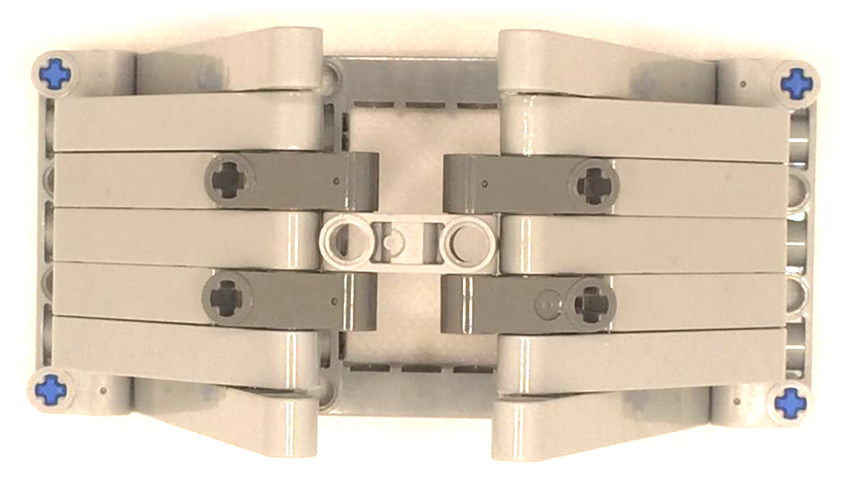
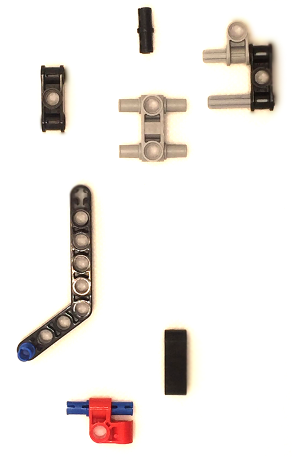
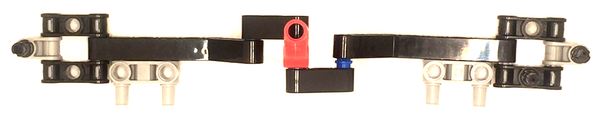
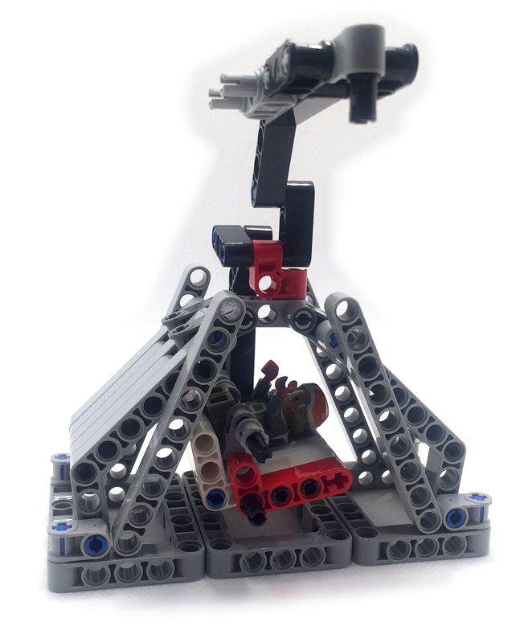

El siguiente reto se trata de construir una cápsula lunar en la que los astronáutas que viajen dentro no sufran la deformación de la misma tras su llegada de nuevo a la tierra tras su paseo lunar.

Una muestra del montaje lo hacemos de la siguiente manera.
Primero construimos los laterales de la cápsula con las siguientes piezas.

Juntamos dichas piezas para obtener esta forma.

Volvemos a repetir los pasos anteriores para hacer otro lado igual y lo unimos al anterior.

Montamos la base de nuestra cápsula.

Le añadimos los laterales previamente montados.

Ahora montamos las puertas laterales con las siguientes piezas. Primiero montamos una y después volvemos a repetir el paso para montar la segunda.

Unimos ambas puertas.

Montamos el asiento de nuestro astronauta.

Y ahora el cinturón de seguridad.

Tanto la cápsula lunar como el asiento y el cinturón, quedarán de la siguiente forma.

Unimos todas las piezas y nos quedará el montaje terminado.
Ya tenemos nuestra cápsula lunar lista para aterrizar en cualquier parte de la tierra.